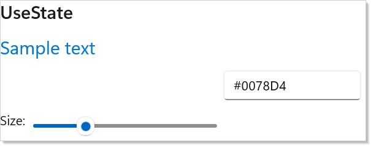
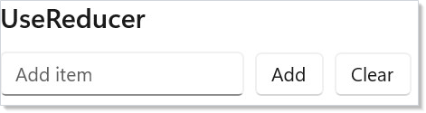
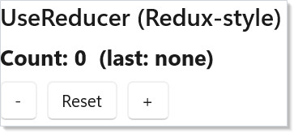
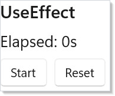
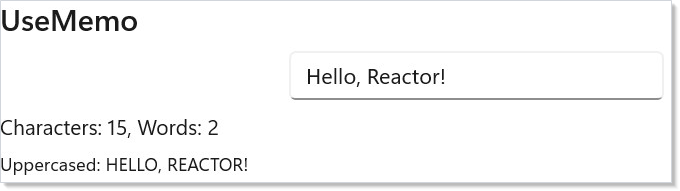
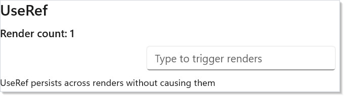
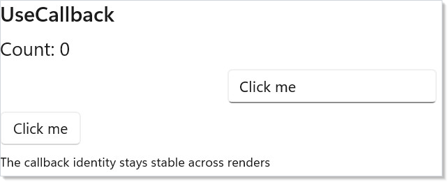

Hooks are the reactivity contract for a component. A hook is a
positional slot — when Render() runs, Microsoft.UI.Reactor (Reactor) walks each Use* call in order
and looks up the matching cell in a per-component slot table held on the
RenderContext. The first UseState call is
slot 0, the second is slot 1, and so on; the setter the hook returns closes
over its slot index and writes back to that cell when you call it. Hooks
replace what classic XAML / WPF apps build with DependencyProperty,
INotifyPropertyChanged, view models, and lifecycle methods — instead of
those four mechanisms, you keep state with UseState, derive values with
UseMemo, run side effects with UseEffect, share data
without prop drilling via UseContext, and keep values
across unmount/remount with UsePersisted. Every hook on this
page reads as a function call inside Render() and writes back through a
setter closure; understanding that single shape makes the rest of Reactor
fall out as composition.
Hooks¶
Hooks are functions you call inside Render() to manage state, side effects,
and memoization. They replace the need for view models, event handlers, and
lifecycle methods.
Reference¶
| Hook | Returns | Purpose |
|---|---|---|
| UseState | (T value, Action<T> set) |
Reactive state — re-renders on set. |
| UseReducer | (T value, Action<Func<T,T>> update) or (TState, Action<TAction>) |
Functional or Redux-style updates. |
| UseEffect | void |
Side effects after commit. With Func<Action> overload, runs the cleanup before the next effect and on unmount. |
| UseMemo | T |
Cached computation; re-runs when any deps entry compares unequal. |
| UseRef | Ref<T> with mutable .Current |
Persists across renders without re-rendering on change. |
| UseCallback | Action |
Stable delegate identity across renders. |
| UseContext | T |
Read the ambient Context value. |
| UseObservable | T |
Re-render when a tracked INotifyPropertyChanged source raises a change. |
| UseExternalStore | TSnapshot |
Bridge subscribe/getSnapshot stores into Reactor and re-render only when the snapshot changes. |
| UseResource | AsyncValue<T> |
Cached async read (see Async Resources). |
| UsePersisted | (T, Action<T>) |
UseState that survives unmount/remount within the process — in-memory, cleared on exit (see Persistence). |
Every hook on this page is summarized again in the auto-generated hooks reference; the rest of the page is the narrative.
UseState¶
The most common hook. Returns the current value and a setter function:
class StateDemo : Component
{
public override Element Render()
{
var (color, setColor) = UseState("#0078D4");
var (size, setSize) = UseState(20.0);
return VStack(12,
SubHeading("UseState"),
TextBlock("Sample text").FontSize(size).Foreground(color),
TextBox(color, setColor, placeholderText: "#hex color")
.AutomationName("Sample text color")
.Width(150),
HStack(8,
TextBlock("Size:"),
Slider(size, 10, 48, setSize)
.AutomationName("Sample text size")
.Width(200)
)
);
}
}

Call setColor("#FF0000") and Reactor re-renders the component with the new
value. The setter is an Action<T> — it takes the new value, not a
function of the previous one. When an update derives from the previous value
(or you call the setter several times in one event), use
UseReducer instead — its updater receives the live
previous value.
UseReducer (Functional)¶
When your new state depends on the old state, UseReducer is cleaner than
UseState. The updater receives a Func<T, T> — a function that transforms
the previous value:
class ReducerDemo : Component
{
public override Element Render()
{
var (items, updateItems) = UseReducer(new List<string>());
var (input, setInput) = UseState("");
return VStack(12,
SubHeading("UseReducer"),
HStack(8,
TextBox(input, setInput, placeholderText: "Add item")
.AutomationName("Item text")
.Width(180),
Button("Add", () =>
{
if (string.IsNullOrWhiteSpace(input)) return;
updateItems(list =>
new List<string>(list) { input });
setInput("");
}),
Button("Clear", () =>
updateItems(_ => new List<string>()))
),
ForEach(items, (item, i) => TextBlock($" - {item}").WithKey($"{i}-{item}"))
);
}
}

updateItems(list => new List<string>(list) { input }) appends to the list
by creating a new copy. This avoids mutation bugs — you always produce a new
value from the old one.
UseReducer (Redux-Style)¶
For complex state with multiple action types, use the Redux-style overload. Define a state record, action types, and a reducer function:
record CounterState(int Count, string LastAction);
abstract record CounterAction;
record Increment : CounterAction; record Decrement : CounterAction;
record Reset : CounterAction;
class ReduxReducerDemo : Component
{
public override Element Render()
{
var (state, dispatch) = UseReducer(
(CounterState s, CounterAction a) => a switch {
Increment => s with { Count = s.Count + 1, LastAction = "+" },
Decrement => s with { Count = s.Count - 1, LastAction = "-" },
Reset => new(0, "reset"), _ => s
}, new CounterState(0, "none"));
return VStack(8,
SubHeading("UseReducer (Redux-style)"),
TextBlock($"Count: {state.Count} (last: {state.LastAction})")
.FontSize(18).Bold(),
HStack(8,
Button("-", () => dispatch(new Decrement()))
.AutomationName("Decrement count"),
Button("Reset", () => dispatch(new Reset())),
Button("+", () => dispatch(new Increment()))
.AutomationName("Increment count")
)
);
}
}

The reducer (state, action) => newState is a pure function. Each action type
maps to a state transformation. This pattern scales well — adding new actions
doesn't change existing logic.
UseEffect¶
Run side effects (timers, subscriptions, async work) after a render. The dependencies array controls when the effect re-runs:
class EffectDemo : Component
{
public override Element Render()
{
var (seconds, updateSeconds) = UseReducer(0);
var (running, setRunning) = UseState(false);
UseEffect(() =>
{
if (!running) return () => { };
var cts = new CancellationTokenSource();
var timer = new PeriodicTimer(TimeSpan.FromSeconds(1));
var token = cts.Token; // capture once — the loop must not re-read cts.Token
_ = Task.Run(async () =>
{
try
{
while (await timer.WaitForNextTickAsync(token))
updateSeconds(s => s + 1);
}
catch (OperationCanceledException) { /* expected on cleanup */ }
});
return () => { cts.Cancel(); timer.Dispose(); };
}, running);
return VStack(8,
SubHeading("UseEffect"),
TextBlock($"Elapsed: {seconds}s").FontSize(18),
HStack(8,
Button(running ? "Stop" : "Start", () => setRunning(!running))
.AutomationName(running ? "Stop timer" : "Start timer"),
Button("Reset", () => updateSeconds(_ => 0))
)
);
}
}

Key details:
- The effect runs after the render completes, not during.
- Return a cleanup function to dispose resources. Reactor calls it before re-running the effect and when the component unmounts.
- Empty dependencies
UseEffect(() => { ... })— runs once on mount. - With dependencies
UseEffect(() => { ... }, running)— runs whenrunningchanges. - Typed-arity overloads — for one, two, or three dependencies,
UseEffect(body, a, b)passes the deps positionally instead of through aparams object[]. The unchanged-deps path allocates no array and avoids boxing value-type deps; behaviour is otherwise identical. The same overloads exist forUseMemoandUseCallback.
UseMemo¶
Cache an expensive computation so it only recalculates when its inputs change:
class MemoDemo : Component
{
public override Element Render()
{
var (input, setInput) = UseState("Hello, Reactor!");
var stats = UseMemo(() => new
{
Chars = input.Length,
Words = input.Split(' ',
StringSplitOptions.RemoveEmptyEntries).Length,
Upper = input.ToUpperInvariant()
}, input);
return VStack(8,
SubHeading("UseMemo"),
TextBox(input, setInput)
.AutomationName("Text to analyze")
.Width(250),
TextBlock($"Characters: {stats.Chars}, Words: {stats.Words}"),
Caption($"Uppercased: {stats.Upper}")
);
}
}

UseMemo compares the dependency values between renders. If they haven't
changed, it returns the cached result. Use it for string processing, filtering
large lists, or any computation you don't want to repeat every render.
For one to three dependencies, the typed-arity overloads
UseMemo(factory, a, b) avoid the params object[] allocation and value-type
boxing on the unchanged path — handy when a memo sits on a hot render path.
UseRef¶
Store a mutable value that persists across renders without triggering re-renders:
class RefDemo : Component
{
public override Element Render()
{
var (value, setValue) = UseState("");
var renderCount = UseRef(0);
renderCount.Current++;
return VStack(8,
SubHeading("UseRef"),
TextBlock($"Render count: {renderCount.Current}").SemiBold(),
TextBox(value, setValue, placeholderText: "Type to trigger renders")
.AutomationName("Render trigger text")
.Width(250),
Caption("UseRef persists across renders without causing them")
);
}
}

UseRef returns a Ref<T> with a .Current property. Changing .Current
does not cause a re-render. This is useful for:
- Counting renders
- Storing previous values for comparison
- Holding references to timers or cancellation tokens
UseCallback¶
Stabilize a callback reference so child components don't re-render unnecessarily:
class CallbackDemo : Component
{
public override Element Render()
{
var (count, updateCount) = UseReducer(0);
var (label, setLabel) = UseState("Click me");
var stableIncrement = UseCallback(
() => updateCount(c => c + 1), Array.Empty<object>());
return VStack(8,
SubHeading("UseCallback"),
TextBlock($"Count: {count}").FontSize(18),
TextBox(label, setLabel, placeholderText: "Button label")
.AutomationName("Button label")
.Width(200),
Button(label, stableIncrement)
.AutomationName("Increment count"),
Caption("The callback identity stays stable across renders")
);
}
}

Without UseCallback, the lambda () => updateCount(c => c + 1) would be a new
object every render. UseCallback returns the same delegate instance as long
as the dependencies haven't changed. This matters when passing callbacks to
memoized child components.
As with UseEffect and UseMemo, the typed-arity overloads
UseCallback(callback, a, b) (1–3 deps) skip the params object[] allocation
and value-type boxing on the unchanged path.
External Stores¶
Some state lives outside Reactor but still has a clean subscription shape:
subscribe to notifications, then ask for the latest snapshot. For that class of
store, UseExternalStore removes the usual UseEffect plus UseReducer
boilerplate:
record SessionSnapshot(string Title);
sealed class SessionStore
{
private SessionSnapshot _snapshot = new("Untitled");
public event Action? Changed;
public SessionSnapshot Snapshot => _snapshot;
public Action Subscribe(Action onChanged)
{
Changed += onChanged;
return () => Changed -= onChanged;
}
public void Rename(string title)
{
_snapshot = new SessionSnapshot(title);
Changed?.Invoke();
}
}
class ExternalStoreDemo : Component
{
private static readonly SessionStore _store = new();
public override Element Render()
{
// `subscribe` is a method group — a stable delegate, so the effect
// doesn't tear down and re-establish the subscription every render.
var snapshot = UseExternalStore(
_store.Subscribe,
() => _store.Snapshot);
return VStack(8,
SubHeading("UseExternalStore"),
TextBlock(snapshot.Title),
Button("Rename", () => _store.Rename($"Doc {Random.Shared.Next(100)}"))
);
}
}
UseExternalStore reads the snapshot during render, subscribes in an effect,
and only queues a re-render when a notification produces a different snapshot.
Pass a custom comparer when the snapshot type needs value semantics different
from EqualityComparer<T>.Default.
Two stability rules keep this hook well-behaved — the same guidance React gives
for useSyncExternalStore:
subscribemust be a stable delegate. It is the effect dependency that decides whether the subscription is torn down and re-established, so pass a method group (_store.Subscribe) or aUseCallback-memoized delegate. A fresh capturing lambda (onChanged => _store.Subscribe(onChanged)) is a new delegate every render and forces an unsubscribe/resubscribe on each one.getSnapshotmust return a cached value. It should only change identity when the underlying data changes. Returning a fresh, never-equal value on every call (() => items.ToArray()) alongside an unstablesubscribecan spin — re-render re-runs the effect, the immediate re-check sees a "change", and that forces another render. Memoize the snapshot or return a value the comparer treats as equal when nothing changed.
Updating State From Background Work¶
Once the host is bootstrapped, UseState and UseReducer setters are safe to
call from any thread. When you invoke a setter from a background task — inside
Task.Run, from a PeriodicTimer loop, from a network callback, or after
await ... ConfigureAwait(false) — the setter automatically marshals the write
and the resulting re-render onto the UI dispatcher. You write the same code
you'd write on the UI thread:
public override Element Render()
{
var (seconds, updateSeconds) = UseReducer(0);
UseEffect(() =>
{
var cts = new CancellationTokenSource();
var token = cts.Token; // capture once — the loop must not re-read cts.Token
_ = Task.Run(async () =>
{
using var timer = new PeriodicTimer(TimeSpan.FromSeconds(1));
try
{
while (await timer.WaitForNextTickAsync(token))
updateSeconds(s => s + 1); // auto-marshals to the UI thread
}
catch (OperationCanceledException) { /* expected on cleanup */ }
});
// Cancel only, and deliberately so. The fire-and-forget worker shares ownership of the
// source: disposing here while it is still inside WaitForNextTickAsync can surface an
// ObjectDisposedException on the token. Nothing leaks — a CTS with no timer and no
// WaitHandle access holds no unmanaged resource, so dropping the reference is enough.
// Dispose only where a single owner can prove the worker has finished.
return () => { cts.Cancel(); };
});
return TextBlock($"Elapsed: {seconds}s");
}
Each cross-thread setter call costs one DispatcherQueue.TryEnqueue —
microseconds, not free, but vastly cheaper than the bugs you'd hit writing the
field directly from a worker. If you need many concurrent setters to apply
in-place rather than serialize through the UI thread (typical for ingest loops
that hammer the same hook from multiple producers), pass threadSafe: true to
the hook:
var (count, setCount) = UseState(0, threadSafe: true);
var (sum, addToSum) = UseReducer(0, threadSafe: true);
threadSafe: true switches the hook to a per-cell lock: concurrent writers
serialize on the lock instead of queuing through the UI dispatcher, and reads
inside the setter (the prev argument of a reducer) see the latest committed
write rather than a snapshot from the last UI tick.
When auto-marshal can't help. The setter needs a captured
ReactorApp.UIDispatcherto marshal onto. In unit-test / headless contexts that driveRenderContextdirectly, or before the first host has been bootstrapped, a cross-thread setter call throwsInvalidOperationExceptioninstead of silently racing. The setter also throws if the dispatcher refuses the marshaled call (e.g., during shutdown). Cancel background producers in your effect cleanup so they stop before the window closes.
Hook Rules¶
Hooks must be called in the same order every render. Reactor tracks hooks by
their position in the call sequence — the first UseState call always maps to
the first state slot, the second to the second, and so on. The internal walk
of _hookIndex against _hooks[currentIndex] is described in
Hooks Internals.
Do:
public override Element Render()
{
var (a, setA) = UseState(0); // always first
var (b, setB) = UseState(""); // always second
UseEffect(() => { /* ... */ }, a); // always third
return TextBlock($"{a} {b}");
}
Don't:
public override Element Render()
{
var (a, setA) = UseState(0);
if (a > 0)
UseEffect(() => { ... }, a); // WRONG: conditional hook
return TextBlock($"{a}");
}
Put the condition inside the hook instead:
Caveat: Calling a hook inside an
if,for,while,switch, ortrychanges the slot index for every hook that follows on any render that takes the branch. The next render then asks slotNfor the type the unbranched call shape expects —ValueHookState<int>vs.EffectHookState, say — and the slot table guard atRenderContext.UseStatethrowsHookOrderException("Hook at index N is EffectHookState, expected ValueHookState<Int32> (UseState). Hooks must be called in the same order every render."). The Roslyn analyzerREACTOR_HOOKS_001flags the literal pattern —Use*inside a control-flow construct in aRenderoverride or aUse*-prefixed custom hook — at compile time as a Warning. The analyzer can't see calls through lambdas, helper functions whose names don't start withUse, or pattern-matched dispatch, so the runtime guard is the backstop. When you hit the exception, look for aUse*call that's conditionally reached — typically the new one you just added.
Patterns¶
Custom hooks¶
A custom hook is any method whose name starts with Use that calls other
hooks inside it. The analyzer treats Use* methods as legitimate hook
contexts, so you can compose UseState, UseEffect, and friends into a
named, reusable bundle without losing the rules.
// A custom hook is a RenderContext extension method whose name starts with
// `Use`. It owns three slots — two UseState and one UseEffect — and the caller
// still gets the simple (value, setter) shape they'd get from UseState.
static class DebouncedTextHook
{
public static (string Value, Action<string> Set) UseDebouncedText(
this RenderContext ctx, string initial, int ms)
{
var (value, setValue) = ctx.UseState(initial);
var (debounced, setDebounced) = ctx.UseState(initial);
ctx.UseEffect(() =>
{
var cts = new CancellationTokenSource();
_ = Task.Run(async () =>
{
try { await Task.Delay(ms, cts.Token); setDebounced(value); }
// Expected: the cleanup below cancels this delay whenever `value`
// changes again inside the debounce window. Cancelling is how the
// stale result is discarded, so there is nothing to report.
catch (OperationCanceledException) { return; }
});
return () => { cts.Cancel(); };
// Both captured values are dependencies. `ms` is easy to leave out —
// it usually comes from a constant at the call site — but omitting it
// means a caller that changes the delay keeps the already-armed timer
// running on the old interval until `value` happens to change.
}, value, ms);
return (debounced, setValue);
}
}
class CustomHookDemo : Component
{
public override Element Render() => Memo(ctx =>
{
var (debounced, setText) = ctx.UseDebouncedText("", 300);
return VStack(8,
SubHeading("Custom hook: UseDebouncedText"),
TextBox(debounced, setText, placeholderText: "Type…")
.AutomationName("Text to debounce")
.Width(250),
Caption($"Debounced: {debounced}")
);
});
}
The hook owns three slots — two UseState and one UseEffect — and the
caller still gets the simple (value, setter) shape they'd get from
UseState. Custom hooks are RenderContext extension methods, so they take
the context explicitly (this RenderContext ctx) and are called off the ctx
of a Memo(ctx => …) function component or a class component's Context.
The compiled Rules of Reactor page
catalogs the full set of custom-hook conventions.
Lifted state¶
When a parent and child both need to read the same value, hoist the
UseState to the parent and pass (value, setter) down as a prop. The
recipes/master-detail walkthrough shows the
classic shape — the master list and the detail panel both react to the
shared selection state. This is the same pattern XAML developers reach
for with shared view models; here the state lives in the parent
component, the children are reactive consumers.
Deferred value via UseRef¶
UseRef is the right tool when a value needs to survive renders but
must not trigger them. Storing the previous prop value for diffing,
holding a CancellationTokenSource, or counting renders for diagnostics
all belong in a ref:
var prev = UseRef<int?>(null);
UseEffect(() => { /* compare prev.Current to current */ prev.Current = current; }, current);
The setter writes to .Current immediately without scheduling a render —
contrast with UseState, where every setter call queues a re-render
through the dispatcher.
Common Mistakes¶
Hooks inside conditionals¶
// Don't:
public override Element Render()
{
var (open, setOpen) = UseState(false);
if (open)
{
UseEffect(() => Subscribe(), Array.Empty<object>()); // REACTOR_HOOKS_001
}
return ...;
}
The effect's slot index moves by one on every render where open flips.
The next render finds EffectHookState where it expected ValueHookState
and throws HookOrderException. The fix is to call the hook
unconditionally and put the condition inside it:
Stale closures¶
// Don't:
var (count, setCount) = UseState(0);
UseEffect(() =>
{
var t = new Timer(_ => setCount(count + 1), null, 0, 1000);
return () => t.Dispose();
}, Array.Empty<object>()); // captured `count` is forever 0
The effect's empty deps array means it captures count once at mount.
The timer fires forever with the stale closure, so the counter sticks at
1. The fix is UseReducer's functional updater — declare
var (count, updateCount) = UseReducer(0) and call updateCount(c => c + 1),
which reads the live cell value instead of the captured variable. (UseState's
setter is an Action<T>; it only takes a value, so it can't express a
previous-value update.)
Setter chain that should use UseReducer¶
class SetterChainDontDemo : Component
{
public override Element Render()
{
// Don't — all three calls read the same captured `count`.
var (count, setCount) = UseState(0);
return Button("+3", () =>
{ setCount(count + 1); setCount(count + 1); setCount(count + 1); });
}
}
The three setter calls all read the same captured count and all write
count + 1 — the button advances by one, not three. Switch to UseReducer
so each functional update sees the previous one's result:
class SetterChainDoDemo : Component
{
public override Element Render()
{
// Do — each functional update sees the previous one's result.
var (count, updateCount) = UseReducer(0);
return Button("+3", () =>
{ updateCount(c => c + 1); updateCount(c => c + 1); updateCount(c => c + 1); });
}
}
This is the same Reactor-wide rule as the stale closure
pattern: when an update derives from the previous value, UseReducer's
functional updater is the right shape. The auto-marshal path for cross-thread
updaters described above relies on the same mechanism — every queued update
reads the latest committed value, not a snapshot.
Reading state right after calling its setter¶
class StaleReadDontDemo : Component
{
static readonly string[] SizeFitNames = ["Contain", "Cover", "Fill"];
public override Element Render()
{
var (sizeFitIdx, setSizeFitIdx) = UseState(0);
// Don't — the setter only queued a re-render.
return ComboBox(SizeFitNames, sizeFitIdx, i =>
{
setSizeFitIdx(i);
Apply(sizeFitIdx); // reads the PREVIOUS index
});
void Apply(int index) { }
}
}
A setter never mutates the local variable in the current closure; it
schedules a re-render that produces a fresh sizeFitIdx on the next
render pass. Reading sizeFitIdx again later in the same handler returns
the stale, pre-update value — switching the dropdown appears to activate
the previously selected item. Use the value you already have in hand:
class StaleReadDoDemo : Component
{
static readonly string[] SizeFitNames = ["Contain", "Cover", "Fill"];
public override Element Render()
{
var (sizeFitIdx, setSizeFitIdx) = UseState(0);
return ComboBox(SizeFitNames, sizeFitIdx, i =>
{
setSizeFitIdx(i);
Apply(i); // use the new value directly
});
void Apply(int index) { }
}
}
The REACTOR_HOOKS_008 analyzer flags a state variable read after its
setter is called in the same synchronous handler — including reads inside
helper lambdas or local functions that are invoked before the next render.
This applies to UseState, UsePersisted, and UseReducer. Truly deferred
callbacks (an event handler you hand off without invoking) are exempt,
because they run on a later render and observe the fresh value.
Note: for
UseState<T>/UsePersisted<T>the setter isAction<T>, so a lambda argument is the new value (whenTis a delegate), not a functional updater. The functional-updater API isUseReducer. A lambda setter argument therefore does not exempt a later stale read.
Tips¶
Use UseReducer for derived updates. updateCount(c => c + 1) is safer
than setCount(count + 1) when an update depends on the previous value or
several updates run in one event — the functional updater reads the live
value, while UseState's Action<T> setter only stores what you pass it.
Always return cleanup from effects that create resources. Timers, subscriptions, and event handlers must be disposed. The cleanup function is your only chance to do it.
Don't overuse UseMemo. Simple expressions like $"{first} {last}" are
cheap. Only memoize when the computation is genuinely expensive or the result
is passed as a dependency elsewhere.
UseRef is not for UI values. If changing a value should update the screen,
use UseState. UseRef is for bookkeeping that doesn't affect rendering.
Keep effects focused. One effect per concern. Don't combine a timer and an
API call in the same UseEffect — split them into separate hooks with their
own dependency arrays. See Effects and Lifecycle for advanced patterns.
Next Steps¶
- Layout — Next: arrange your UI with VStack, HStack, Grid, and responsive patterns
- Components — Previous: component classes, props, and composition
- Effects and Lifecycle — Advanced UseEffect patterns, cleanup, and async work
- Context — Share state across the tree without prop drilling
- Hooks Internals — How the slot table actually works under the surface
- Persistence —
UsePersistedfor state that survives unmount/remount in-process - Rules of Reactor — Hook rules, idioms, and anti-patterns in one place